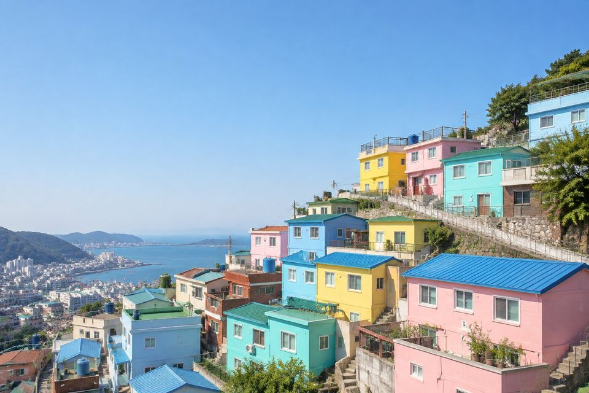

layeris
A Python library for Photoshop-style blend modes, brightness, contrast, hue, saturation and lightness adjustments, and curves on separate RGB channels.
It is built on NumPy and Pillow. Every operation returns the image, so a whole edit reads as one chained pipeline.
image = LayerImage.from_file("photos/gamcheon-village.jpg")The unedited sample photo, gamcheon-village.jpg.
image = LayerImage.from_file("photos/gamcheon-village.jpg")
(image.curve("r", [0, 0.15, 0.55, 0.9, 1])
.curve("g", [0, 0.2, 0.55, 0.85, 1])
.curve("b", [0.22, 0.35, 0.48, 0.6, 0.72]))From the examples: Cross-processed
image = LayerImage.from_file("photos/gamcheon-village.jpg")
(image.lightness(0.18)
.saturation(-0.2)
.screen("#ffc4d6", opacity=0.35))From the examples: Pastel dream
image = LayerImage.from_file("photos/gamcheon-village.jpg")
pixels = image.get_image_as_array()
image = LayerImage.from_array(pixels[..., [1, 0, 2]].copy()) # swap R and G
image.contrast(1.1)From the examples: Channel swap



Video
A short walkthrough: installing, chaining operations, the blend modes, curves and a few looks. Every edit in it is rendered by layeris.
Install
From PyPI
pip install layerisRequires Python 3.10 or higher. The only dependencies are NumPy, Pillow and Requests.
From source
git clone https://github.com/subwaymatch/layer-is-python.git
cd layer-is-python
pip install -e .Quick Start
Load an image from a file, a URL or a NumPy array, chain operations, and save. Every operation mutates the image in place and returns it, so a whole look reads as one pipeline.
Use clone() to branch off an independent copy first.
from layeris import LayerImage
image = LayerImage.from_file("photo.jpg")
(image.grayscale()
.brightness(0.1)
.multiply("#3fe28f", opacity=0.7)
.curve("rgb", [0, 0.1, 0.4, 0.65, 0.9, 1])
.save("result.jpg"))Load and Save
from layeris import LayerImage
# From a local file
image = LayerImage.from_file('/path/to/image.jpg')
# From a URL
image = LayerImage.from_url('https://example.com/photo.jpg')
# From a NumPy array (float, values in [0, 1], shape HxWx3 or HxWx4)
import numpy as np
data = np.random.random((100, 100, 3))
image = LayerImage.from_array(data)# Default quality is 95 for JPEG
image.save('output.jpg')
# Specify JPEG quality (0 to 100)
image.save('output.jpg', quality=85)
# Save as PNG (lossless)
image.save('output.png')Performance
Photos loaded with from_file() or from_url() stay as 8-bit
images while you apply per-channel operations: brightness,
contrast, lightness, curve and every blend mode
with a hex color. Each of these only depends on a pixel's own channel value, and an
8-bit channel has just 256 possible values, so instead of processing every pixel,
layeris updates a 256-entry lookup table. Pillow applies the table in one pass when
you call resize() or save().
get_image_as_array(), grayscale(),
hue(), saturation() and blending with a per-pixel NumPy
array need float pixels, so they convert the image to float64 once and later
operations run in float64. Either way, the results are identical to processing every
pixel in float64.
In These Docs
Examples
24 complete looks (fixes, color grades, film, black & white and creative effects), each with a before/after slider and copy-paste code.


Blend Modes
All 14 blend modes side by side on three photos, plus how opacity and the blend color change the result.
Operations
A before/after reference for every LayerImage method, from grayscale() to pin_light().

API Reference
Signatures, parameters and return values for every method, plus the keys each operation takes in a JSON preset.